Last updated: 2025-02-14
Checks: 5 2
Knit directory: sapphire/
This reproducible R Markdown analysis was created with workflowr (version 1.7.1). The Checks tab describes the reproducibility checks that were applied when the results were created. The Past versions tab lists the development history.
The R Markdown is untracked by Git. To know which version of the R
Markdown file created these results, you’ll want to first commit it to
the Git repo. If you’re still working on the analysis, you can ignore
this warning. When you’re finished, you can run
wflow_publish to commit the R Markdown file and build the
HTML.
Great job! The global environment was empty. Objects defined in the global environment can affect the analysis in your R Markdown file in unknown ways. For reproduciblity it’s best to always run the code in an empty environment.
The command set.seed(20240923) was run prior to running
the code in the R Markdown file. Setting a seed ensures that any results
that rely on randomness, e.g. subsampling or permutations, are
reproducible.
Great job! Recording the operating system, R version, and package versions is critical for reproducibility.
Nice! There were no cached chunks for this analysis, so you can be confident that you successfully produced the results during this run.
Using absolute paths to the files within your workflowr project makes it difficult for you and others to run your code on a different machine. Change the absolute path(s) below to the suggested relative path(s) to make your code more reproducible.
| absolute | relative |
|---|---|
| ~/sapphire/data/serum_vit_D_study_with_lab_results.xlsx | data/serum_vit_D_study_with_lab_results.xlsx |
| ~/sapphire/data/sun_expos_data/sun_expos_long.csv | data/sun_expos_data/sun_expos_long.csv |
| ~/sapphire/data/summer_winter.csv | data/summer_winter.csv |
| ~/sapphire/data/food_freq_data/food_freq_long.csv | data/food_freq_data/food_freq_long.csv |
Great! You are using Git for version control. Tracking code development and connecting the code version to the results is critical for reproducibility.
The results in this page were generated with repository version e721fee. See the Past versions tab to see a history of the changes made to the R Markdown and HTML files.
Note that you need to be careful to ensure that all relevant files for
the analysis have been committed to Git prior to generating the results
(you can use wflow_publish or
wflow_git_commit). workflowr only checks the R Markdown
file, but you know if there are other scripts or data files that it
depends on. Below is the status of the Git repository when the results
were generated:
Ignored files:
Ignored: .DS_Store
Ignored: .RData
Ignored: .Rhistory
Ignored: .Rproj.user/
Ignored: analysis/.RData
Ignored: analysis/.Rhistory
Untracked files:
Untracked: .lock_gPLINK
Untracked: .metafile_gPLINK
Untracked: SAfrADMIX/
Untracked: analysis/color_metrics.Rmd
Untracked: analysis/genotype.R
Untracked: analysis/lilyanalysis.Rmd
Untracked: cielab
Untracked: data/dist_pops.csv
Untracked: data/snpset.csv
Untracked: data/summer_winter.csv
Unstaged changes:
Modified: analysis/statsplot.Rmd
Note that any generated files, e.g. HTML, png, CSS, etc., are not included in this status report because it is ok for generated content to have uncommitted changes.
There are no past versions. Publish this analysis with
wflow_publish() to start tracking its development.
file_path <- "~/sapphire/data/serum_vit_D_study_with_lab_results.xlsx"
data_summer <- read_excel(file_path, sheet = "ScreeningDataCollectionSummer")
data_winter <- read_excel(file_path, sheet = "ScreeningDataCollectionWinter")
data_6weeks <- read_excel(file_path, sheet = "ScreeningDataCollection6Weeks")
sun_expos <- read.csv("~/sapphire/data/sun_expos_data/sun_expos_long.csv")
sun_expos_summer <- sun_expos[sun_expos$collection_period == 'Summer', ]
sun_expos_winter <- sun_expos[sun_expos$collection_period == 'Winter', ]
sun_expos_6Weeks <- sun_expos[sun_expos$collection_period == '6Weeks', ]
summer_winter <- read.csv("~/sapphire/data/summer_winter.csv")
food_freq_long <- read_csv("~/sapphire/data/food_freq_data/food_freq_long.csv")Rows: 218 Columns: 201
── Column specification ────────────────────────────────────────────────────────
Delimiter: ","
chr (47): participant_centre_id, interviewer_name, sardines_brand_descripti...
dbl (77): sardines_times_per_week, sardines_times_per_day, sardines_amount_...
lgl (76): sardines_no, sardines_yes, sardines_source, sardines_notes, pilch...
date (1): today_date
ℹ Use `spec()` to retrieve the full column specification for this data.
ℹ Specify the column types or set `show_col_types = FALSE` to quiet this message.Due to the extensive genetic and phenotypic diversity present in South Africa, our dataset is a unique opportunity to study constitutive and facultative skin pigmentation. It has been assumed that inner arm pigmentation is an accurate representation of constitutive pigmentation, whereas forehead pigmentation represents facultative skin pigmentation. This assumption has not been tested in diverse populations.
For each reflectance metric, for each individual, for each season, measurements were taken three times. What is the variability between these triplicates?
sites <- c("Forehead", "RightUpperInnerArm", "LeftUpperInnerArm")
metrics <- c("E", "M", "R", "G", "B", "L\\*", "a\\*", "b\\*")
for(site in sites) {
for(metric in metrics) {
triplicate_dist_summer <- data_summer %>%
rowwise() %>%
mutate(!!paste0("Mean", site, metric) := mean(c_across(matches(paste0("SkinReflectance", site, metric, "[123]"))), na.rm = TRUE),
!!paste0("Median", site, metric) := median(c_across(matches(paste0("SkinReflectance", site, metric, "[123]"))), na.rm = TRUE),
!!paste0("SD", site, metric) := sd(c_across(matches(paste0("SkinReflectance", site, metric, "[123]"))), na.rm = TRUE)) %>%
ungroup()
}
}
for(site in sites) {
for(metric in metrics) {
triplicate_dist_winter <- data_winter %>%
rowwise() %>%
mutate(!!paste0("Mean", site, metric) := mean(c_across(matches(paste0("SkinReflectance", site, metric, "[123]"))), na.rm = TRUE),
!!paste0("Median", site, metric) := median(c_across(matches(paste0("SkinReflectance", site, metric, "[123]"))), na.rm = TRUE),
!!paste0("SD", site, metric) := sd(c_across(matches(paste0("SkinReflectance", site, metric, "[123]"))), na.rm = TRUE)) %>%
ungroup()
}
}
for(site in sites) {
for(metric in metrics) {
triplicate_dist_6weeks <- data_6weeks %>%
rowwise() %>%
mutate(!!paste0("Mean", site, metric) := mean(c_across(matches(paste0("SkinReflectance", site, metric, "[123]"))), na.rm = TRUE),
!!paste0("Median", site, metric) := median(c_across(matches(paste0("SkinReflectance", site, metric, "[123]"))), na.rm = TRUE),
!!paste0("SD", site, metric) := sd(c_across(matches(paste0("SkinReflectance", site, metric, "[123]"))), na.rm = TRUE)) %>%
ungroup()
}
}sites <- c("Forehead", "RightUpperInnerArm", "LeftUpperInnerArm")
metrics <- c("E", "M", "R", "G", "B", "L*", "a*", "b*")
site_pattern <- paste(sites, collapse = "|")
metric_pattern <- paste(metrics, collapse = "|")
names(data_6weeks) <- gsub("\\\\", "", names(data_6weeks))
names(data_6weeks) <- gsub("\\*", "", names(data_6weeks))
names(data_summer) <- gsub("\\\\", "", names(data_summer))
names(data_summer) <- gsub("\\*", "", names(data_summer))
names(data_winter) <- gsub("\\\\", "", names(data_winter))
names(data_winter) <- gsub("\\*", "", names(data_winter))
six_week_rename <- data_6weeks %>%
rename_with(~ paste0(., "_6weeks"), -ParticipantCentreID)
joinone <- left_join(data_summer, data_winter,
by = "ParticipantCentreID",
suffix = c("_summer", "_winter"))
wide_data <- left_join(joinone, six_week_rename,
by = "ParticipantCentreID")
wide_filter<-wide_data%>%
select(matches("ParticipantCentreID|SkinReflectance"))
filter6 <- data_6weeks %>%
select(matches("ParticipantCentreID|SkinReflectance"))
long6 <- filter6 %>%
pivot_longer(
cols = -ParticipantCentreID,
names_to = c("Site", "Metric", "Triplicate"),
names_pattern = "SkinReflectance(.*)([EMRGBLab])([123])",
values_to = "Value"
)
longseason <- wide_filter %>%
pivot_longer(
cols = -ParticipantCentreID,
names_to = c("Site", "Metric", "Triplicate", "Season"),
names_pattern = "SkinReflectance(.*)([EMRGBLab])([123])(_.*)",
values_to = "Value"
)
longseason <- na.omit(longseason)
longseason_sd <- longseason %>%
group_by(ParticipantCentreID, Site, Metric, Season) %>%
summarise(sd_value = sd(Value, na.rm = TRUE), .groups = 'drop')
ggplot(longseason_sd, aes(x = ParticipantCentreID, y = sd_value, color = Metric)) +
geom_point() + # Use points to show the standard deviation for each participant
labs(
title = "SD of triplicates for participant, metric",
x = "Participant",
y = "Standard deviation"
) +
theme_minimal()+
theme(
axis.text.x = element_blank(),
axis.ticks.x = element_blank()
)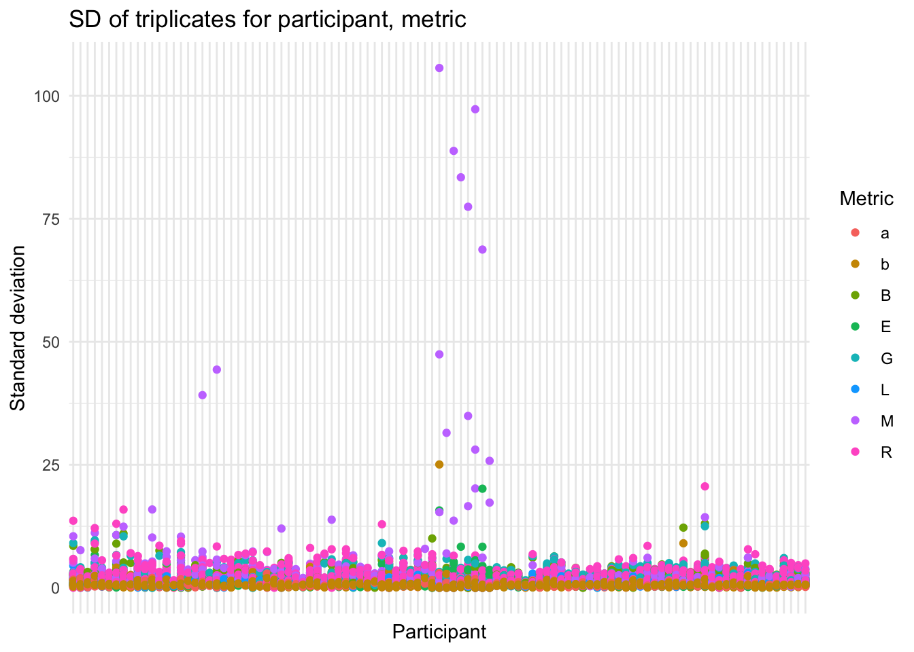
longseason_rg <- longseason %>%
group_by(ParticipantCentreID, Site, Metric, Season) %>%
summarise(
range = max(Value, na.rm = TRUE) - min(Value, na.rm = TRUE), # Subtract the min from the max
.groups = 'drop'
)
ggplot(longseason_rg, aes(x = ParticipantCentreID, y = range, color = Metric)) +
geom_point() + # Use points to show the standard deviation for each participant
labs(
title = "Range of triplicates for participant, metric",
x = "Participant",
y = "Range"
) +
theme_classic() +
scale_color_manual(values = c("R" = "red", "G" = "green", "B" = "blue", "L" = "#fffdd0", "a" = "orange", "b" = "#4fb9af", "M" = "#4a2c2a", "E" = "pink")) +
theme(
axis.text.x = element_blank(),
axis.ticks.x = element_blank(),
panel.grid.major = element_blank(),
panel.grid.minor = element_blank()
)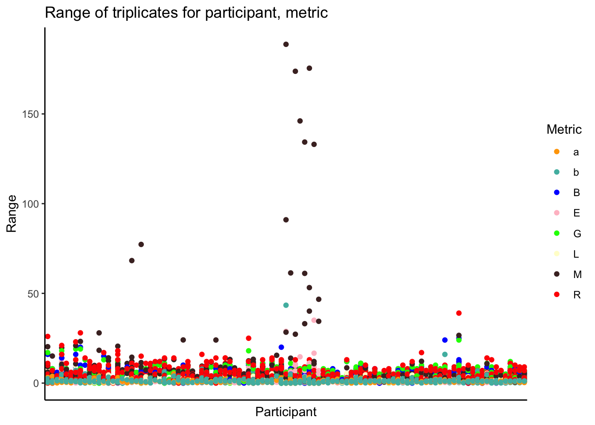
We can see that there is a large amount of variance even within each individual for each of the three metrics. Because of this, we should take the median of the three measurements and trim outliers (150+ range)
How much variability do we see within an individual’s forehead and inner arm measurements across time?
First we need to clean our data by taking the median of the three measures.
longseason_clean <- longseason %>%
group_by(ParticipantCentreID, Site, Metric, Season) %>%
summarize(
Value = median(Value, na.rm = TRUE), # Subtract the min from the max
.groups = 'drop'
)
longseason_clean$Season[longseason_clean$Season == '_summer'] <- 'Summer'
longseason_clean$Season[longseason_clean$Season == '_winter'] <- 'Winter'
longseason_clean$Season[longseason_clean$Season == '_6weeks'] <- '6Weeks'
longseason_clean$Season = factor(longseason_clean$Season, levels = c("Summer", "Winter", "6Weeks"))# subtract the maximum of the three measurements from the minimum of the three measurements
# meaning forehead, rightupperinnerarm, leftupperinnerarm
longseason_intersite_var <- longseason_clean %>%
group_by(ParticipantCentreID, Metric, Site, Season) %>%
filter(Site %in% c("Forehead", "RightUpperInnerArm", "LeftUpperInnerArm")) %>%
spread(key = Site, value = Value) %>%
mutate(
intersite_var = `Forehead` - pmin(`RightUpperInnerArm`, `LeftUpperInnerArm`, na.rm = TRUE)
) %>%
select(ParticipantCentreID, Metric, Season, intersite_var) %>%
ungroup()
longseason_intersite_var %>%
group_by(ParticipantCentreID, Metric) %>%
ggplot(aes(Season, intersite_var, color = Metric, group = interaction(ParticipantCentreID, Metric))) +
geom_point() +
geom_line() +
labs(
title = "Intersite variation across seasons",
x = "Season",
y = "Intersite variation"
) +
theme_classic() +
scale_color_manual(values = c("R" = "red", "G" = "green", "B" = "blue", "L" = "#fffdd0", "a" = "orange", "b" = "#4fb9af", "M" = "#4a2c2a", "E" = "pink")) +
theme(
panel.grid.major = element_blank(),
panel.grid.minor = element_blank()
)Warning: Removed 6 rows containing missing values or values outside the scale range
(`geom_point()`).Warning: Removed 6 rows containing missing values or values outside the scale range
(`geom_line()`).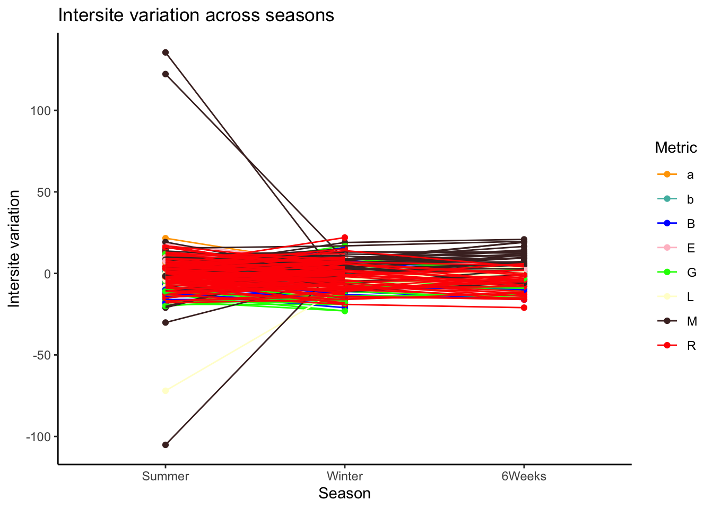
longseason_intersite_var %>%
filter(Metric %in% c("L", "a", "b")) %>%
group_by(ParticipantCentreID, Metric) %>%
ggplot(aes(Season, intersite_var, color = Metric, group = interaction(ParticipantCentreID, Metric))) +
geom_point() +
geom_line() +
labs(
title = "Intersite variation across seasons",
x = "Season",
y = "Intersite variation"
) +
theme_classic() +
scale_color_manual(values = c("L" = "grey", "a" = "orange", "b" = "#4fb9af")) +
theme(
panel.grid.major = element_blank(),
panel.grid.minor = element_blank()
)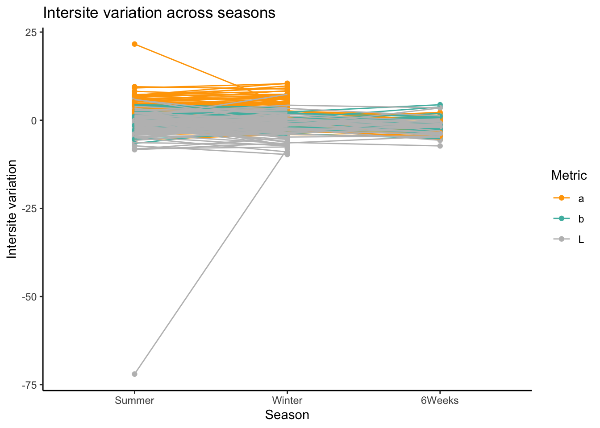
longseason_intersite_var %>%
filter(Metric %in% c("R", "G", "B")) %>%
group_by(ParticipantCentreID, Metric) %>%
ggplot(aes(Season, intersite_var, color = Metric, group = interaction(ParticipantCentreID, Metric))) +
geom_point() +
geom_line() +
labs(
title = "Intersite variation across seasons",
x = "Season",
y = "Intersite variation"
) +
theme_classic() +
scale_color_manual(values = c("R" = "red", "G" = "green", "B" = "blue")) +
theme(
panel.grid.major = element_blank(),
panel.grid.minor = element_blank()
)Warning: Removed 6 rows containing missing values or values outside the scale range
(`geom_point()`).Warning: Removed 6 rows containing missing values or values outside the scale range
(`geom_line()`).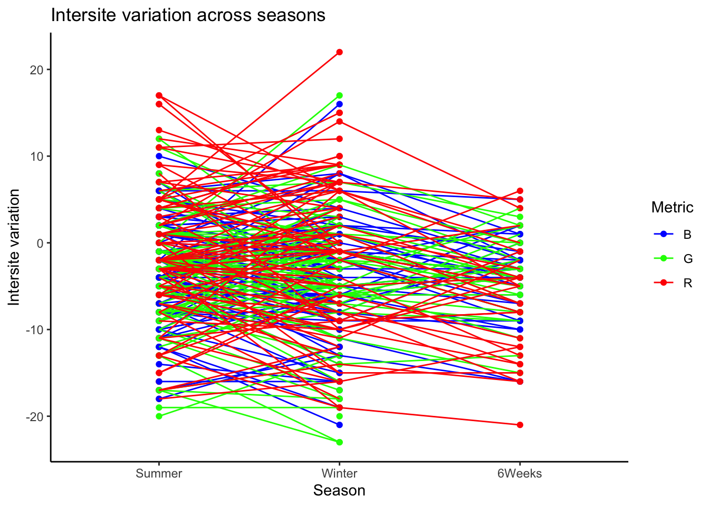
longseason_intersite_var %>%
filter(Metric %in% c("M", "E")) %>%
group_by(ParticipantCentreID, Metric) %>%
ggplot(aes(Season, intersite_var, color = Metric, group = interaction(ParticipantCentreID, Metric))) +
geom_point() +
geom_line() +
labs(
title = "Intersite variation across seasons",
x = "Season",
y = "Intersite variation"
) +
theme_classic() +
scale_color_manual(values = c("M" = "#4a2c2a", "E" = "pink")) +
theme(
panel.grid.major = element_blank(),
panel.grid.minor = element_blank()
)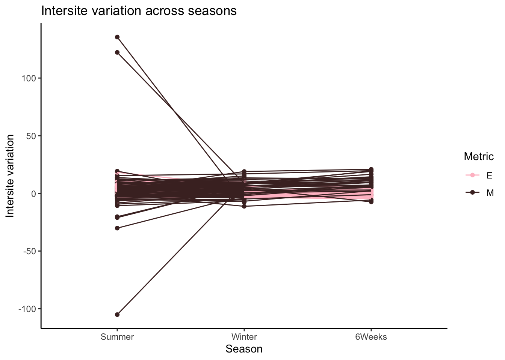
In addition to all of the reflectance data, we have survey data on subjects diet and sunning behavior. Making full use of this behavioral data may allow us to create predictions regarding vitamin d levels and tanning response. First, we have to join the sun exposure and diet data to the pigmentation data. Then, we have to factorize the times of day and hours per day spent outside into levels. Similarly, we have to factorize the diet data into levels of vitamin d consumption.
sun_expos$x1time_spent_outdoors_weekday = factor(sun_expos$x1time_spent_outdoors_weekday,
levels = c("Less than 15 minutes",
"Between 15 and 30 minutes",
"Between 30 minutes and 2 hours",
"Between 2 and 5 hours",
"More than 5 hours"))
sun_expos$x3time_spent_outdoors_weekend_day = factor(sun_expos$x3time_spent_outdoors_weekend_day,
levels = c("Less than 15 minutes",
"Between 15 and 30 minutes",
"Between 30 minutes and 2 hours",
"Between 2 and 5 hours",
"More than 5 hours"))
sun_expos$x2time_of_day_begin_of_exposure_weekday = factor(sun_expos$x2time_of_day_begin_of_exposure_weekday,
levels = c("Before 10h00",
"Between 10h00 and 12h00",
"Between 12h00 and 14h00",
"Between 14h00 and 16h00",
"After 16h00"))
sun_expos$x4time_of_day_begin_of_exposure_weekend = factor(sun_expos$x4time_of_day_begin_of_exposure_weekend,
levels = c("Before 10h00",
"Between 10h00 and 12h00",
"Between 12h00 and 14h00",
"Between 14h00 and 16h00",
"After 16h00"))food_freq <- food_freq_long %>%
select(-matches("source|notes|description|per_100|per100|_no|proportion|amount|time"))
names <- c("sardines_yes", "pilchards_yes", "snoek_yes", "tuna_tinned_water_yes", "tuna_tinned_oil_yes",
"tuna_fresh_yes", "mackerel_yes")
for (name in names) {
food_freq[[name]] <- factor(food_freq[[name]], levels = c("TRUE", "FALSE"))
}
food_freq <- food_freq[,colSums(is.na(food_freq))<nrow(food_freq)]
food_freq <- food_freq %>%
mutate_at(vars(matches("micro_grams|vit_d_intake")), ~replace(., is.na(.), 0))
food_freq<-food_freq %>%
mutate(vitd_quantile_intake = cut(total_vit_d_intake, 100, label = FALSE))
vitdscore <- food_freq %>%
select(c(participant_centre_id, vitd_quantile_intake, collection_period, total_vit_d_intake))
longvitd <- left_join(longseason_clean, vitdscore, by = c("ParticipantCentreID" = "participant_centre_id", "Season" = "collection_period"))
vitdshort <- food_freq %>%
filter(collection_period == "Summer")
scores <- wide_data %>%
mutate(serum_vitd_score = cut(VitDResult_summer, 100, label = FALSE))
scores <- scores %>%
select(c("serum_vitd_score", "ParticipantCentreID"))
names(scores)[names(scores) == "ParticipantCentreID"] <- "IID"
scores$IID <- gsub("VDKH([0-9]+)", "VDKHS\\1", scores$IID)
scores$IID <- gsub("([A-Za-z]+)0(\\d{2})$", "\\1\\2", scores$IID)
scores <- scores[, c("IID", "serum_vitd_score")]moving forward i need to replace the fam file from the SAfrADMIX vault with a new fam file from the phenotype data and then run plink as usual as it is throwing errors for missing phenotype data when I try and use a separate file.
long2 <- wide_data %>%
select(matches("VitDResult|ParticipantCentreID"))
long2 <- pivot_longer(long2,
cols = c(VitDResult_summer, VitDResult_6weeks, VitDResult_winter),
names_to = c(".value","Season"),
names_sep = "_")
long2 <- long2 %>%
mutate(Season = recode(Season, "summer" = "Summer"),
Season = recode(Season, "winter" = "Winter"),
Season = recode(Season, "6weeks" = "6Weeks"))
longvitd2 <- left_join(longvitd, long2, by = c("ParticipantCentreID", "Season"))
longvitd2 <- left_join(longvitd2, sun_expos, by = c("ParticipantCentreID" = "participant_centre_id", "Season" = "collection_period"))ggplot(longvitd, aes(x = vitd_quantile_intake, y = Value, colour = Metric)) +
geom_point(size = 2) +
theme_classic() +
theme(legend.position = "none")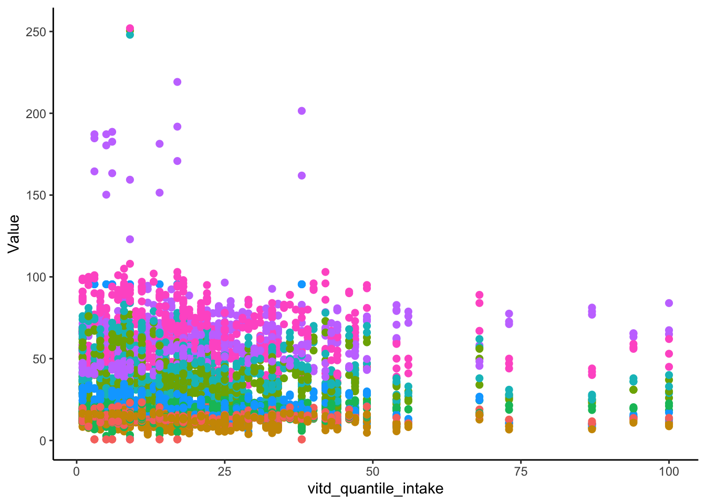
lmer <- lmer(Value ~ vitd_quantile_intake + Season + Metric + (1|ParticipantCentreID), data = longvitd)
qqnorm(resid(lmer))
qqline(resid(lmer))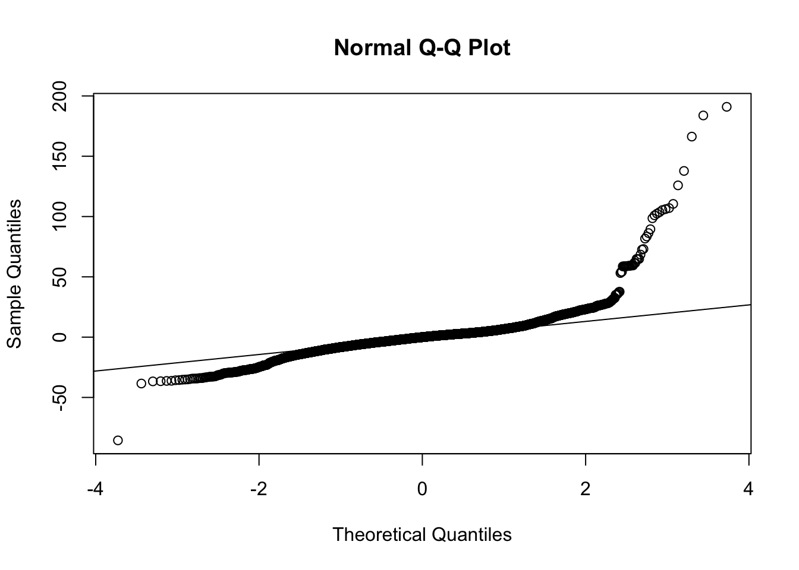
plot(lmer) 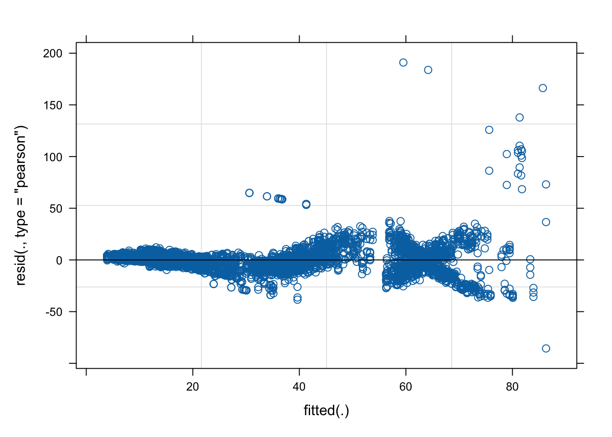
ggplot(longvitd2, aes(x = Value, y = vitd_quantile_intake)) +
geom_point() +
geom_smooth(method = "lm")`geom_smooth()` using formula = 'y ~ x'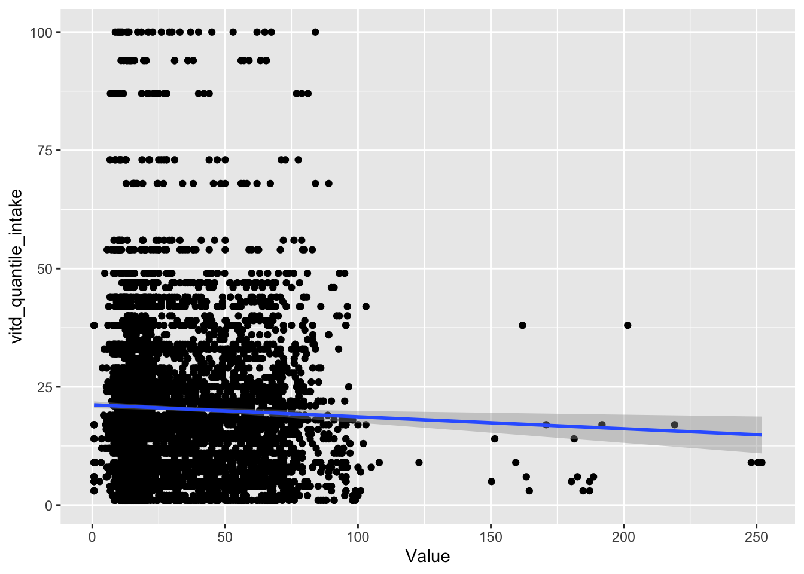
ggplot(longvitd2, aes(x = vitd_quantile_intake, y = VitDResult, colour = Season)) +
geom_point(size = 2) +
theme_classic() +
theme(legend.position = "none")Warning: Removed 48 rows containing missing values or values outside the scale range
(`geom_point()`).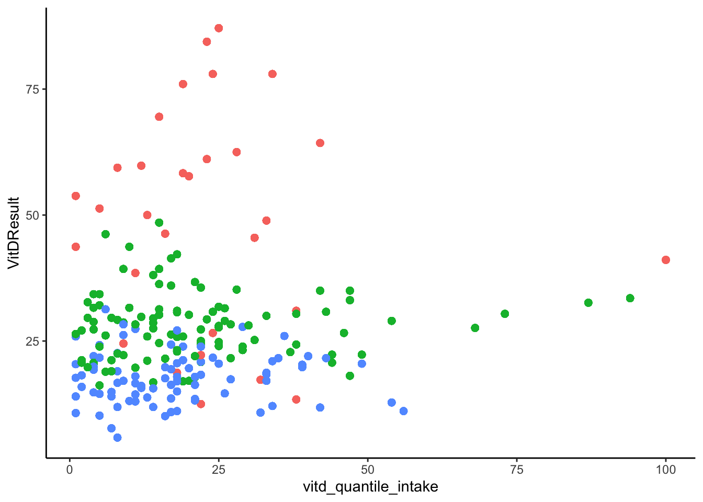
lm3 <- lm(VitDResult ~ total_vit_d_intake + Season + x1time_spent_outdoors_weekday +
x3time_spent_outdoors_weekend_day + x2time_of_day_begin_of_exposure_weekday + x4time_of_day_begin_of_exposure_weekend, data = longvitd2)
summary(lm3)
Call:
lm(formula = VitDResult ~ total_vit_d_intake + Season + x1time_spent_outdoors_weekday +
x3time_spent_outdoors_weekend_day + x2time_of_day_begin_of_exposure_weekday +
x4time_of_day_begin_of_exposure_weekend, data = longvitd2)
Residuals:
Min 1Q Median 3Q Max
-35.967 -4.005 -0.212 4.348 33.622
Coefficients:
Estimate
(Intercept) 44.5030
total_vit_d_intake -0.0708
SeasonSummer -21.6297
SeasonWinter -30.9661
x1time_spent_outdoors_weekdayBetween 15 and 30 minutes 3.3263
x1time_spent_outdoors_weekdayBetween 30 minutes and 2 hours 5.0713
x1time_spent_outdoors_weekdayBetween 2 and 5 hours 2.5304
x1time_spent_outdoors_weekdayMore than 5 hours 4.4319
x3time_spent_outdoors_weekend_dayBetween 15 and 30 minutes -1.2726
x3time_spent_outdoors_weekend_dayBetween 30 minutes and 2 hours -5.5954
x3time_spent_outdoors_weekend_dayBetween 2 and 5 hours 0.1242
x3time_spent_outdoors_weekend_dayMore than 5 hours 1.7321
x2time_of_day_begin_of_exposure_weekdayBetween 10h00 and 12h00 1.8968
x2time_of_day_begin_of_exposure_weekdayBetween 12h00 and 14h00 2.6896
x2time_of_day_begin_of_exposure_weekdayBetween 14h00 and 16h00 -1.2953
x2time_of_day_begin_of_exposure_weekdayAfter 16h00 -1.8668
x4time_of_day_begin_of_exposure_weekendBetween 10h00 and 12h00 -0.5777
x4time_of_day_begin_of_exposure_weekendBetween 12h00 and 14h00 3.3639
x4time_of_day_begin_of_exposure_weekendBetween 14h00 and 16h00 1.8340
x4time_of_day_begin_of_exposure_weekendAfter 16h00 2.6464
Std. Error
(Intercept) 0.8229
total_vit_d_intake 0.0193
SeasonSummer 0.4073
SeasonWinter 0.4171
x1time_spent_outdoors_weekdayBetween 15 and 30 minutes 0.6261
x1time_spent_outdoors_weekdayBetween 30 minutes and 2 hours 0.6234
x1time_spent_outdoors_weekdayBetween 2 and 5 hours 0.6348
x1time_spent_outdoors_weekdayMore than 5 hours 0.6676
x3time_spent_outdoors_weekend_dayBetween 15 and 30 minutes 0.7669
x3time_spent_outdoors_weekend_dayBetween 30 minutes and 2 hours 0.7591
x3time_spent_outdoors_weekend_dayBetween 2 and 5 hours 0.7377
x3time_spent_outdoors_weekend_dayMore than 5 hours 0.7633
x2time_of_day_begin_of_exposure_weekdayBetween 10h00 and 12h00 0.3633
x2time_of_day_begin_of_exposure_weekdayBetween 12h00 and 14h00 0.3827
x2time_of_day_begin_of_exposure_weekdayBetween 14h00 and 16h00 0.5121
x2time_of_day_begin_of_exposure_weekdayAfter 16h00 0.8687
x4time_of_day_begin_of_exposure_weekendBetween 10h00 and 12h00 0.3954
x4time_of_day_begin_of_exposure_weekendBetween 12h00 and 14h00 0.4251
x4time_of_day_begin_of_exposure_weekendBetween 14h00 and 16h00 0.5196
x4time_of_day_begin_of_exposure_weekendAfter 16h00 0.7322
t value
(Intercept) 54.081
total_vit_d_intake -3.669
SeasonSummer -53.111
SeasonWinter -74.239
x1time_spent_outdoors_weekdayBetween 15 and 30 minutes 5.312
x1time_spent_outdoors_weekdayBetween 30 minutes and 2 hours 8.134
x1time_spent_outdoors_weekdayBetween 2 and 5 hours 3.986
x1time_spent_outdoors_weekdayMore than 5 hours 6.638
x3time_spent_outdoors_weekend_dayBetween 15 and 30 minutes -1.660
x3time_spent_outdoors_weekend_dayBetween 30 minutes and 2 hours -7.371
x3time_spent_outdoors_weekend_dayBetween 2 and 5 hours 0.168
x3time_spent_outdoors_weekend_dayMore than 5 hours 2.269
x2time_of_day_begin_of_exposure_weekdayBetween 10h00 and 12h00 5.220
x2time_of_day_begin_of_exposure_weekdayBetween 12h00 and 14h00 7.028
x2time_of_day_begin_of_exposure_weekdayBetween 14h00 and 16h00 -2.530
x2time_of_day_begin_of_exposure_weekdayAfter 16h00 -2.149
x4time_of_day_begin_of_exposure_weekendBetween 10h00 and 12h00 -1.461
x4time_of_day_begin_of_exposure_weekendBetween 12h00 and 14h00 7.912
x4time_of_day_begin_of_exposure_weekendBetween 14h00 and 16h00 3.530
x4time_of_day_begin_of_exposure_weekendAfter 16h00 3.614
Pr(>|t|)
(Intercept) < 2e-16 ***
total_vit_d_intake 0.000246 ***
SeasonSummer < 2e-16 ***
SeasonWinter < 2e-16 ***
x1time_spent_outdoors_weekdayBetween 15 and 30 minutes 1.13e-07 ***
x1time_spent_outdoors_weekdayBetween 30 minutes and 2 hours 5.17e-16 ***
x1time_spent_outdoors_weekdayBetween 2 and 5 hours 6.81e-05 ***
x1time_spent_outdoors_weekdayMore than 5 hours 3.51e-11 ***
x3time_spent_outdoors_weekend_dayBetween 15 and 30 minutes 0.097075 .
x3time_spent_outdoors_weekend_dayBetween 30 minutes and 2 hours 1.96e-13 ***
x3time_spent_outdoors_weekend_dayBetween 2 and 5 hours 0.866340
x3time_spent_outdoors_weekend_dayMore than 5 hours 0.023300 *
x2time_of_day_begin_of_exposure_weekdayBetween 10h00 and 12h00 1.86e-07 ***
x2time_of_day_begin_of_exposure_weekdayBetween 12h00 and 14h00 2.37e-12 ***
x2time_of_day_begin_of_exposure_weekdayBetween 14h00 and 16h00 0.011449 *
x2time_of_day_begin_of_exposure_weekdayAfter 16h00 0.031675 *
x4time_of_day_begin_of_exposure_weekendBetween 10h00 and 12h00 0.144023
x4time_of_day_begin_of_exposure_weekendBetween 12h00 and 14h00 3.08e-15 ***
x4time_of_day_begin_of_exposure_weekendBetween 14h00 and 16h00 0.000419 ***
x4time_of_day_begin_of_exposure_weekendAfter 16h00 0.000304 ***
---
Signif. codes: 0 '***' 0.001 '**' 0.01 '*' 0.05 '.' 0.1 ' ' 1
Residual standard error: 9 on 5065 degrees of freedom
(90 observations deleted due to missingness)
Multiple R-squared: 0.5925, Adjusted R-squared: 0.591
F-statistic: 387.6 on 19 and 5065 DF, p-value: < 2.2e-16ethnicity <- function(EthnicityAfricanBlack, EthnicityColoured, EthnicityWhite,
EthnicityIndianAsian) {
case_when(
EthnicityAfricanBlack == TRUE &
EthnicityColoured == FALSE &
EthnicityWhite == FALSE &
EthnicityIndianAsian == FALSE ~ "Xhosa",
EthnicityAfricanBlack == FALSE &
EthnicityColoured == TRUE &
EthnicityWhite == FALSE &
EthnicityIndianAsian == FALSE ~ "Cape_colored",
TRUE ~ NA_character_
)
}
data_summer <- data_summer %>%
mutate(Ethnicity = ethnicity(EthnicityAfricanBlack, EthnicityColoured,
EthnicityWhite, EthnicityIndianAsian))
data_summer = subset(data_summer, select = -c(EthnicityAfricanBlack,
EthnicityColoured, EthnicityWhite,
EthnicityIndianAsian, EthnicitySpecifyOther,
EthnicityOther))
data_winter <- data_winter %>%
mutate(Ethnicity = ethnicity(EthnicityAfricanBlack, EthnicityColoured,
EthnicityWhite, EthnicityIndianAsian))
data_winter = subset(data_winter, select = -c(EthnicityAfricanBlack,
EthnicityColoured, EthnicityWhite,
EthnicityIndianAsian, EthnicitySpecifyOther,
EthnicityOther))
data_6weeks <- data_6weeks %>%
mutate(Ethnicity = ethnicity(EthnicityAfricanBlack, EthnicityColoured,
EthnicityWhite, EthnicityIndianAsian))
data_6weeks = subset(data_6weeks, select = -c(EthnicityAfricanBlack,
EthnicityColoured, EthnicityWhite,
EthnicityIndianAsian, EthnicitySpecifyOther,
EthnicityOther))
raw <- left_join(data_summer, data_winter, by = c("ParticipantCentreID", "Ethnicity"), suffix = c("_summer", "_winter"))clean_raw <- raw %>%
select(
contains("SkinReflectance"),
contains("ParticipantCentreID"),
contains("Ethnicity"),
contains("VitD")
)
naomit_rawclean <- na.omit(clean_raw)
raw_pca <- naomit_rawclean %>%
select(matches("SkinReflectance"))
raw_pca <- scale(raw_pca)
reflectancepca_raw <- prcomp(raw_pca)
summary(reflectancepca_raw)Importance of components:
PC1 PC2 PC3 PC4 PC5 PC6 PC7
Standard deviation 10.1553 3.9857 2.14861 1.83993 1.33523 1.26488 1.16041
Proportion of Variance 0.7162 0.1103 0.03206 0.02351 0.01238 0.01111 0.00935
Cumulative Proportion 0.7162 0.8265 0.85856 0.88207 0.89445 0.90556 0.91491
PC8 PC9 PC10 PC11 PC12 PC13 PC14
Standard deviation 1.03621 1.01608 0.92469 0.8736 0.84294 0.83523 0.78299
Proportion of Variance 0.00746 0.00717 0.00594 0.0053 0.00493 0.00484 0.00426
Cumulative Proportion 0.92237 0.92954 0.93548 0.9408 0.94571 0.95056 0.95481
PC15 PC16 PC17 PC18 PC19 PC20 PC21
Standard deviation 0.7199 0.67257 0.6573 0.64504 0.61005 0.5760 0.54262
Proportion of Variance 0.0036 0.00314 0.0030 0.00289 0.00258 0.0023 0.00204
Cumulative Proportion 0.9584 0.96155 0.9646 0.96744 0.97003 0.9723 0.97438
PC22 PC23 PC24 PC25 PC26 PC27 PC28
Standard deviation 0.51265 0.48749 0.48345 0.47679 0.46836 0.44240 0.4321
Proportion of Variance 0.00183 0.00165 0.00162 0.00158 0.00152 0.00136 0.0013
Cumulative Proportion 0.97620 0.97785 0.97948 0.98105 0.98258 0.98394 0.9852
PC29 PC30 PC31 PC32 PC33 PC34 PC35
Standard deviation 0.4157 0.40295 0.38720 0.37729 0.37035 0.34760 0.32844
Proportion of Variance 0.0012 0.00113 0.00104 0.00099 0.00095 0.00084 0.00075
Cumulative Proportion 0.9864 0.98756 0.98860 0.98959 0.99054 0.99138 0.99213
PC36 PC37 PC38 PC39 PC40 PC41 PC42
Standard deviation 0.31075 0.30473 0.30219 0.27428 0.26238 0.25094 0.24546
Proportion of Variance 0.00067 0.00064 0.00063 0.00052 0.00048 0.00044 0.00042
Cumulative Proportion 0.99280 0.99345 0.99408 0.99460 0.99508 0.99552 0.99594
PC43 PC44 PC45 PC46 PC47 PC48 PC49
Standard deviation 0.24297 0.23094 0.22696 0.2086 0.19809 0.19053 0.18530
Proportion of Variance 0.00041 0.00037 0.00036 0.0003 0.00027 0.00025 0.00024
Cumulative Proportion 0.99635 0.99672 0.99708 0.9974 0.99765 0.99790 0.99814
PC50 PC51 PC52 PC53 PC54 PC55 PC56
Standard deviation 0.17282 0.16318 0.16000 0.14913 0.14781 0.13537 0.12855
Proportion of Variance 0.00021 0.00018 0.00018 0.00015 0.00015 0.00013 0.00011
Cumulative Proportion 0.99835 0.99853 0.99871 0.99886 0.99902 0.99914 0.99926
PC57 PC58 PC59 PC60 PC61 PC62 PC63
Standard deviation 0.12352 0.11169 0.10983 0.10294 0.09834 0.08166 0.07943
Proportion of Variance 0.00011 0.00009 0.00008 0.00007 0.00007 0.00005 0.00004
Cumulative Proportion 0.99936 0.99945 0.99953 0.99961 0.99968 0.99972 0.99977
PC64 PC65 PC66 PC67 PC68 PC69 PC70
Standard deviation 0.07465 0.07108 0.06598 0.06402 0.05338 0.05130 0.04791
Proportion of Variance 0.00004 0.00004 0.00003 0.00003 0.00002 0.00002 0.00002
Cumulative Proportion 0.99980 0.99984 0.99987 0.99990 0.99992 0.99994 0.99995
PC71 PC72 PC73 PC74 PC75 PC76
Standard deviation 0.04199 0.04003 0.03406 0.03370 0.02667 0.02215
Proportion of Variance 0.00001 0.00001 0.00001 0.00001 0.00000 0.00000
Cumulative Proportion 0.99996 0.99998 0.99998 0.99999 1.00000 1.00000
PC77
Standard deviation 9.075e-16
Proportion of Variance 0.000e+00
Cumulative Proportion 1.000e+00reflectancepca_raw$loadings[, 1:2]NULLfviz_eig(reflectancepca_raw, addlabels = TRUE)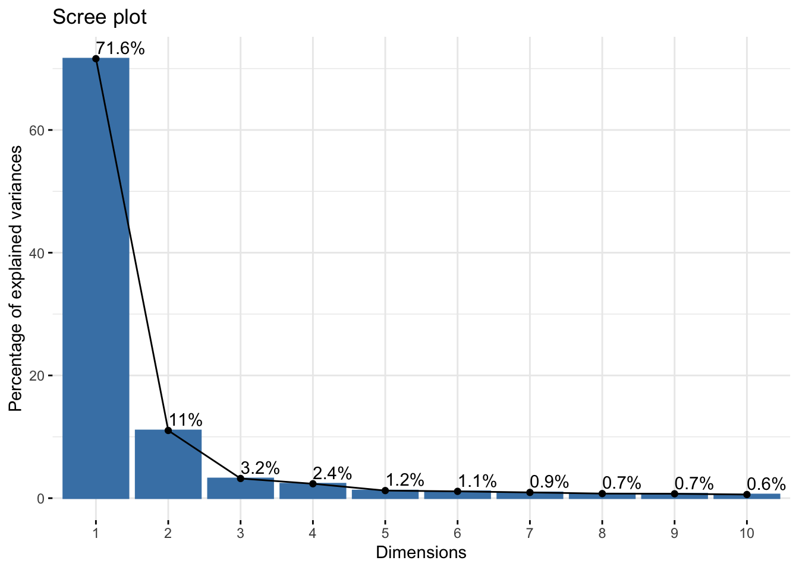
fviz_pca_var(reflectancepca_raw, col.var = "black")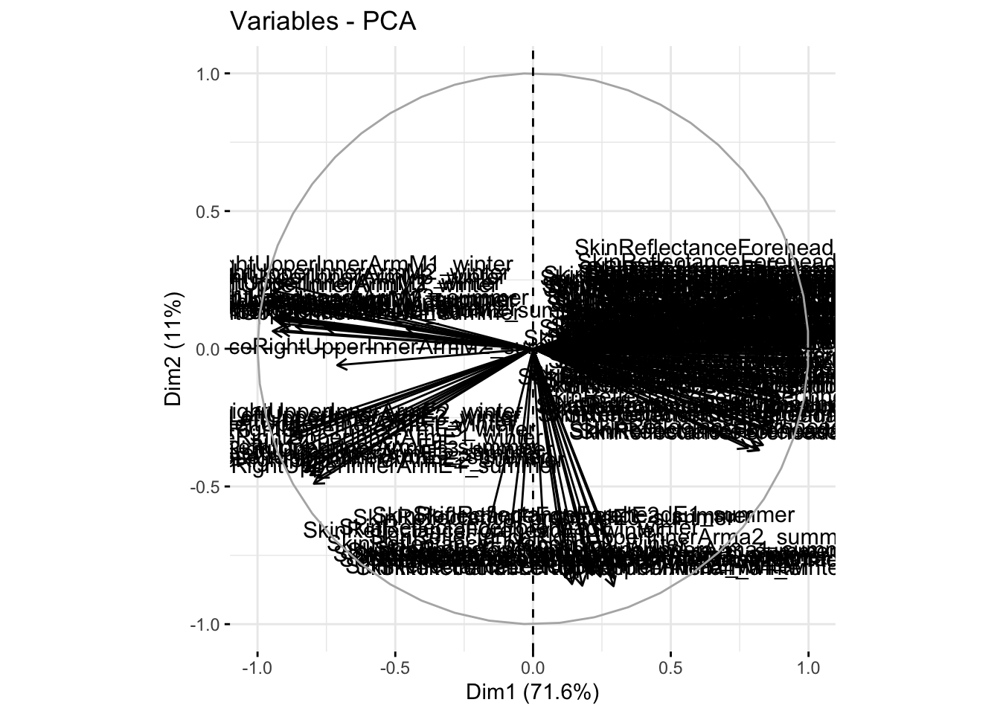
raw_comps <- as.data.frame(reflectancepca_raw$x)
wide_pc_score <- cbind(naomit_rawclean,raw_comps[,c(1,2)])
ggplot(wide_pc_score, aes(x=PC1, y=PC2, col = Ethnicity, fill = Ethnicity)) +
stat_ellipse(geom = "polygon", col= "black", alpha =0.5)+
geom_point(shape=21, col="black") +
labs(title = "Wide Pigmentation PCA")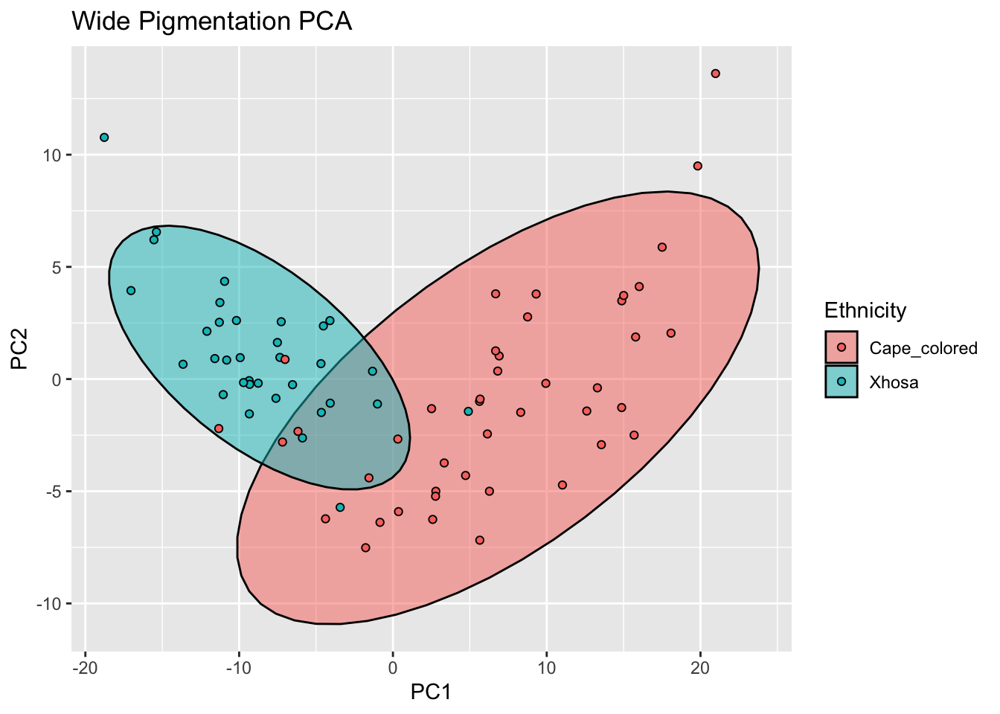
This is a PCA with the triplicate measurements for each individual across RGB and CIElab colorspaces including melanin and erythema indices. Now, I need to do the same thing for each individual in each colorspace in each season in order to accurately construct PC scores for each individual, for each colorspace, for each season. These can then be used as outcome variables in a linear regression using vitamin d levels, ethnicity, and season as predictors? I will only do this for summer and winter measurements, as the six week measurements were only taken for Xhosa individuals.
winter <- raw %>%
select(matches("_winter|ParticipantCentreID|Ethnicity"))
winter <- winter %>%
select(
contains("SkinReflectance"),
contains("ParticipantCentreID"),
contains("Ethnicity"),
contains("VitD")
)
summer <- raw %>%
select(matches("_summer|ParticipantCentreID|Ethnicity"))
summer <- summer %>%
select(
contains("SkinReflectance"),
contains("ParticipantCentreID"),
contains("Ethnicity"),
contains("VitD")
)
naomit_winter <- na.omit(winter)
naomit_summer <- na.omit(summer)
winter_rgb <- naomit_winter %>%
select(matches("ForeheadR|InnerArmR|ForeheadG|InnerArmG|ForeheadB|InnerArmB", ignore.case = FALSE))
winter_cie <- naomit_winter %>%
select(matches("ForeheadL|InnerArmL|Foreheada|InnerArma|Foreheadb|InnerArmb", ignore.case = FALSE))
summer_rgb <- naomit_summer %>%
select(matches("ForeheadR|InnerArmR|ForeheadG|InnerArmG|ForeheadB|InnerArmB", ignore.case = FALSE))
summer_cie <- naomit_summer %>%
select(matches("ForeheadL|InnerArmL|Foreheada|InnerArma|Foreheadb|InnerArmb", ignore.case = FALSE))w_rgb <- scale(winter_rgb)
w_rgb_pca <- prcomp(w_rgb)
summary(w_rgb_pca)Importance of components:
PC1 PC2 PC3 PC4 PC5 PC6 PC7
Standard deviation 4.9711 1.09826 0.50829 0.43420 0.39527 0.33905 0.30206
Proportion of Variance 0.9153 0.04467 0.00957 0.00698 0.00579 0.00426 0.00338
Cumulative Proportion 0.9153 0.95993 0.96950 0.97648 0.98227 0.98652 0.98990
PC8 PC9 PC10 PC11 PC12 PC13 PC14
Standard deviation 0.28245 0.25832 0.20916 0.14573 0.11356 0.10082 0.08381
Proportion of Variance 0.00295 0.00247 0.00162 0.00079 0.00048 0.00038 0.00026
Cumulative Proportion 0.99286 0.99533 0.99695 0.99774 0.99821 0.99859 0.99885
PC15 PC16 PC17 PC18 PC19 PC20 PC21
Standard deviation 0.07637 0.06859 0.06419 0.05731 0.05394 0.05267 0.04510
Proportion of Variance 0.00022 0.00017 0.00015 0.00012 0.00011 0.00010 0.00008
Cumulative Proportion 0.99907 0.99924 0.99939 0.99952 0.99962 0.99973 0.99980
PC22 PC23 PC24 PC25 PC26 PC27
Standard deviation 0.03762 0.03403 0.02918 0.02797 0.02485 0.02301
Proportion of Variance 0.00005 0.00004 0.00003 0.00003 0.00002 0.00002
Cumulative Proportion 0.99985 0.99990 0.99993 0.99996 0.99998 1.00000w_rgb_pca$loadings[, 1:2]NULLfviz_eig(w_rgb_pca, addlabels = TRUE)fviz_pca_var(w_rgb_pca, col.var = "black")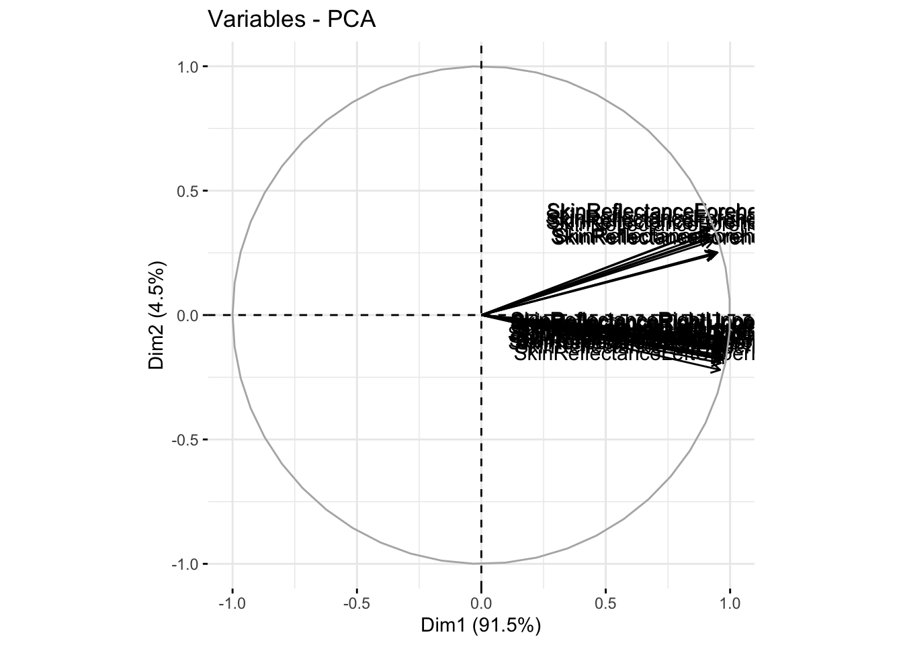
w_rgb_comps <- as.data.frame(w_rgb_pca$x)
w_rgb_score <- cbind(naomit_winter,w_rgb_comps[,c(1,2)])
ggplot(w_rgb_score, aes(x=PC1, y=PC2, col = Ethnicity, fill = Ethnicity)) +
stat_ellipse(geom = "polygon", col= "black", alpha =0.5)+
geom_point(shape=21, col="black") +
labs(title = "Winter RGB Pigmentation PCA")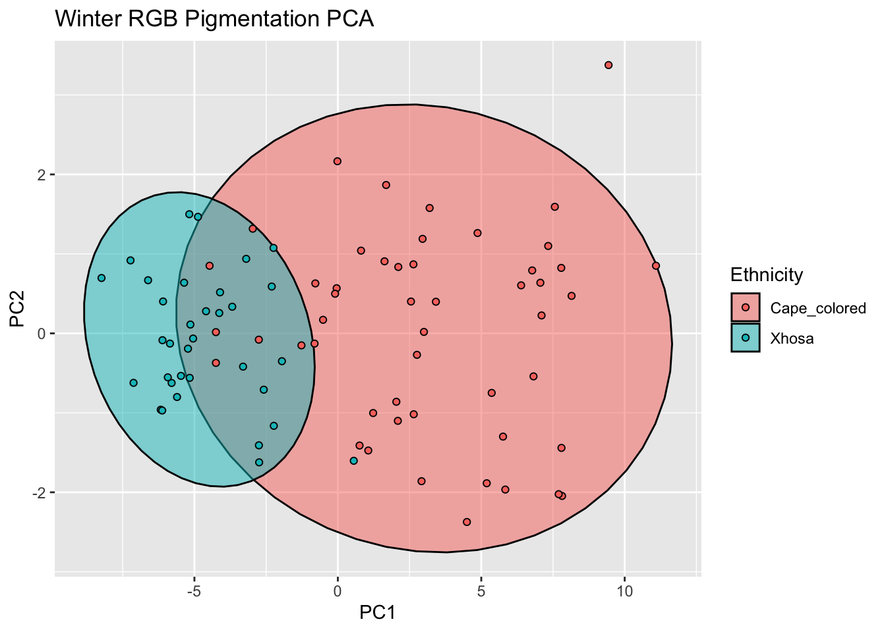
w_cie <- scale(winter_cie)
w_cie_pca <- prcomp(w_cie)
summary(w_rgb_pca)Importance of components:
PC1 PC2 PC3 PC4 PC5 PC6 PC7
Standard deviation 4.9711 1.09826 0.50829 0.43420 0.39527 0.33905 0.30206
Proportion of Variance 0.9153 0.04467 0.00957 0.00698 0.00579 0.00426 0.00338
Cumulative Proportion 0.9153 0.95993 0.96950 0.97648 0.98227 0.98652 0.98990
PC8 PC9 PC10 PC11 PC12 PC13 PC14
Standard deviation 0.28245 0.25832 0.20916 0.14573 0.11356 0.10082 0.08381
Proportion of Variance 0.00295 0.00247 0.00162 0.00079 0.00048 0.00038 0.00026
Cumulative Proportion 0.99286 0.99533 0.99695 0.99774 0.99821 0.99859 0.99885
PC15 PC16 PC17 PC18 PC19 PC20 PC21
Standard deviation 0.07637 0.06859 0.06419 0.05731 0.05394 0.05267 0.04510
Proportion of Variance 0.00022 0.00017 0.00015 0.00012 0.00011 0.00010 0.00008
Cumulative Proportion 0.99907 0.99924 0.99939 0.99952 0.99962 0.99973 0.99980
PC22 PC23 PC24 PC25 PC26 PC27
Standard deviation 0.03762 0.03403 0.02918 0.02797 0.02485 0.02301
Proportion of Variance 0.00005 0.00004 0.00003 0.00003 0.00002 0.00002
Cumulative Proportion 0.99985 0.99990 0.99993 0.99996 0.99998 1.00000w_cie_pca$loadings[, 1:2]NULLfviz_eig(w_cie_pca, addlabels = TRUE)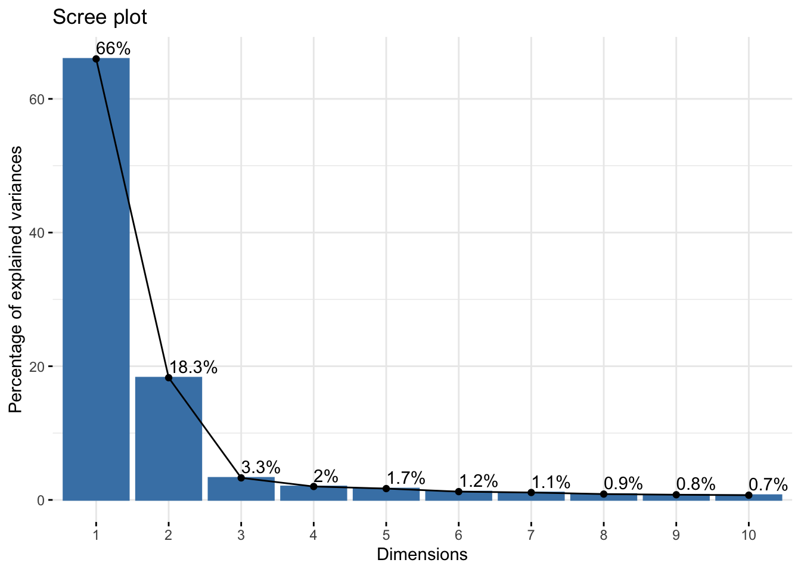
fviz_pca_var(w_cie_pca, col.var = "black")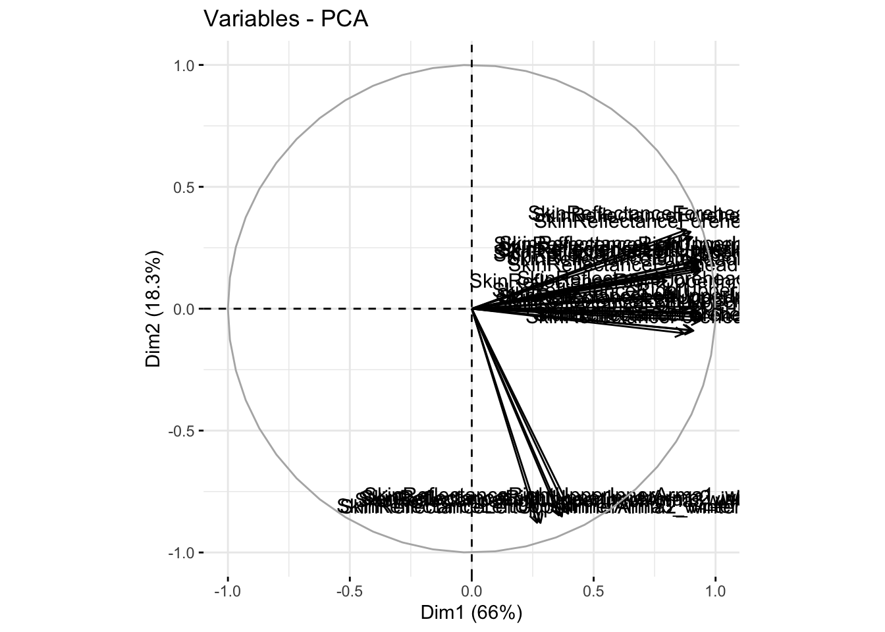
w_cie_comps <- as.data.frame(w_cie_pca$x)
w_cie_score <- cbind(naomit_winter,w_cie_comps[,c(1,2)])
ggplot(w_cie_score, aes(x=PC1, y=PC2, col = Ethnicity, fill = Ethnicity)) +
stat_ellipse(geom = "polygon", col= "black", alpha =0.5)+
geom_point(shape=21, col="black") +
labs(title = "Winter CIElab Pigmentation PCA")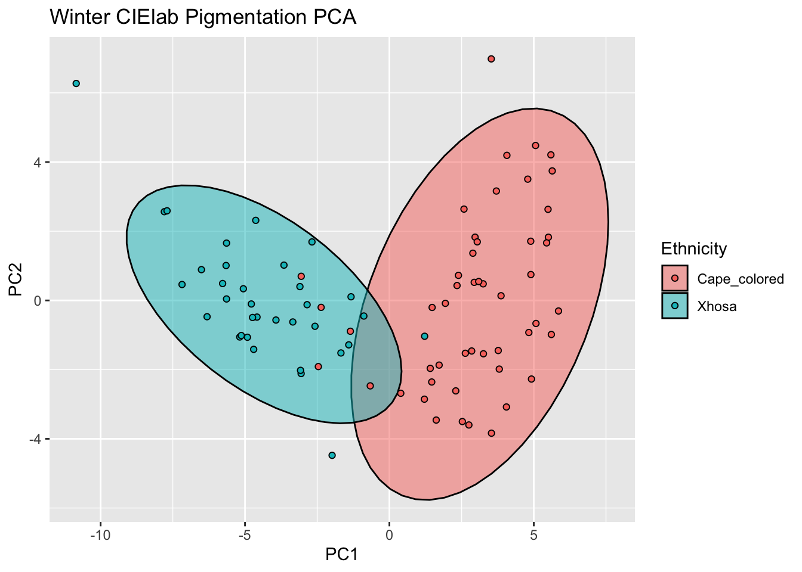
s_rgb <- scale(summer_rgb)
s_rgb_pca <- prcomp(s_rgb)
summary(s_rgb_pca)Importance of components:
PC1 PC2 PC3 PC4 PC5 PC6 PC7
Standard deviation 4.902 1.21588 0.59379 0.52159 0.46243 0.41917 0.33803
Proportion of Variance 0.890 0.05475 0.01306 0.01008 0.00792 0.00651 0.00423
Cumulative Proportion 0.890 0.94476 0.95782 0.96790 0.97582 0.98232 0.98656
PC8 PC9 PC10 PC11 PC12 PC13 PC14
Standard deviation 0.3118 0.29877 0.25287 0.17677 0.15727 0.11223 0.09184
Proportion of Variance 0.0036 0.00331 0.00237 0.00116 0.00092 0.00047 0.00031
Cumulative Proportion 0.9902 0.99346 0.99583 0.99699 0.99791 0.99837 0.99868
PC15 PC16 PC17 PC18 PC19 PC20 PC21
Standard deviation 0.08918 0.08249 0.07032 0.05643 0.04773 0.04603 0.04462
Proportion of Variance 0.00029 0.00025 0.00018 0.00012 0.00008 0.00008 0.00007
Cumulative Proportion 0.99898 0.99923 0.99941 0.99953 0.99962 0.99969 0.99977
PC22 PC23 PC24 PC25 PC26 PC27
Standard deviation 0.03968 0.03624 0.03132 0.03012 0.02957 0.02454
Proportion of Variance 0.00006 0.00005 0.00004 0.00003 0.00003 0.00002
Cumulative Proportion 0.99983 0.99988 0.99991 0.99995 0.99998 1.00000s_rgb_pca$loadings[, 1:2]NULLfviz_eig(s_rgb_pca, addlabels = TRUE)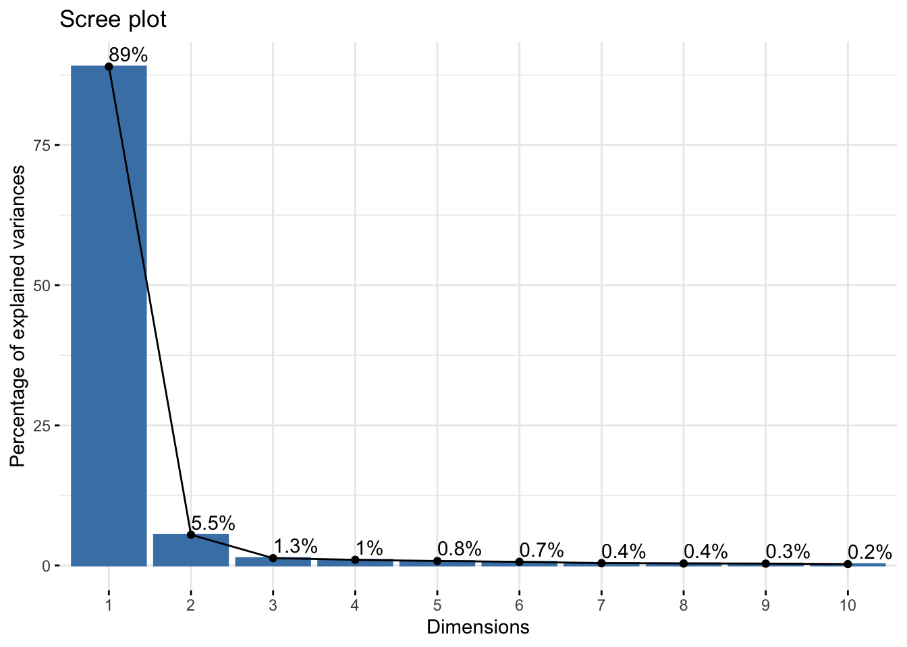
fviz_pca_var(s_rgb_pca, col.var = "black")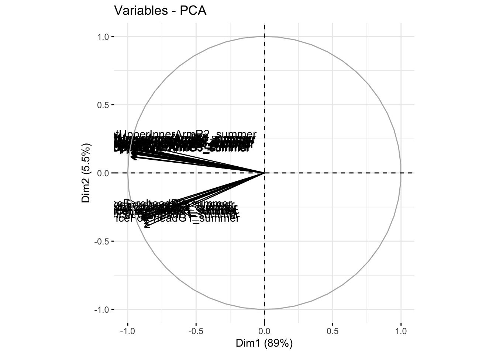
s_rgb_comps <- as.data.frame(s_rgb_pca$x)
s_rgb_score <- cbind(naomit_summer,s_rgb_comps[,c(1,2)])
ggplot(s_rgb_score, aes(x=PC1, y=PC2, col = Ethnicity, fill = Ethnicity)) +
stat_ellipse(geom = "polygon", col= "black", alpha =0.5)+
geom_point(shape=21, col="black") +
labs(title = "Summer RGB Pigmentation PCA")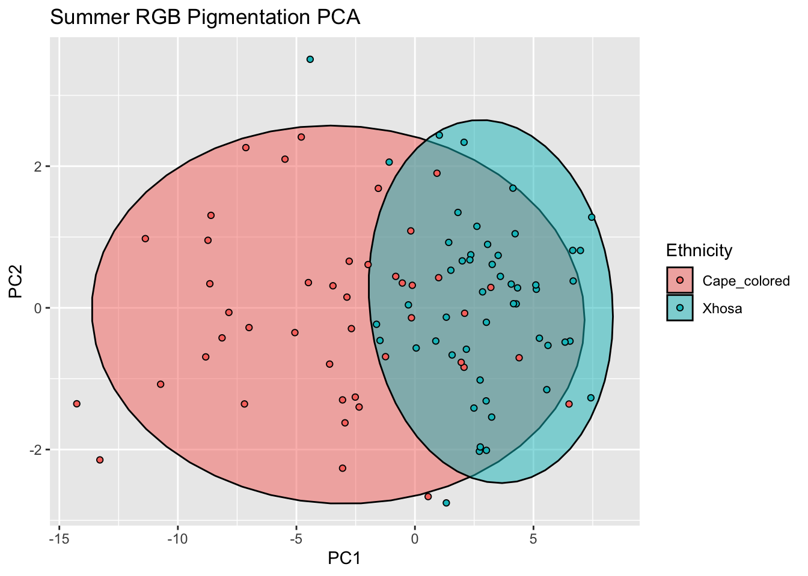
s_cie <- scale(summer_cie)
s_cie_pca <- prcomp(s_cie)
summary(s_cie_pca)Importance of components:
PC1 PC2 PC3 PC4 PC5 PC6 PC7
Standard deviation 4.1899 2.1348 1.10262 0.8426 0.73286 0.65766 0.59434
Proportion of Variance 0.6502 0.1688 0.04503 0.0263 0.01989 0.01602 0.01308
Cumulative Proportion 0.6502 0.8190 0.86402 0.8903 0.91021 0.92623 0.93931
PC8 PC9 PC10 PC11 PC12 PC13 PC14
Standard deviation 0.49244 0.44817 0.40797 0.36534 0.34623 0.33757 0.33169
Proportion of Variance 0.00898 0.00744 0.00616 0.00494 0.00444 0.00422 0.00407
Cumulative Proportion 0.94829 0.95573 0.96190 0.96684 0.97128 0.97550 0.97957
PC15 PC16 PC17 PC18 PC19 PC20 PC21
Standard deviation 0.31967 0.28805 0.26637 0.25285 0.23534 0.2144 0.18539
Proportion of Variance 0.00378 0.00307 0.00263 0.00237 0.00205 0.0017 0.00127
Cumulative Proportion 0.98336 0.98643 0.98906 0.99143 0.99348 0.9952 0.99645
PC22 PC23 PC24 PC25 PC26 PC27
Standard deviation 0.17664 0.14025 0.12218 0.11482 0.10074 0.08127
Proportion of Variance 0.00116 0.00073 0.00055 0.00049 0.00038 0.00024
Cumulative Proportion 0.99761 0.99834 0.99889 0.99938 0.99976 1.00000s_cie_pca$loadings[, 1:2]NULLfviz_eig(s_cie_pca, addlabels = TRUE)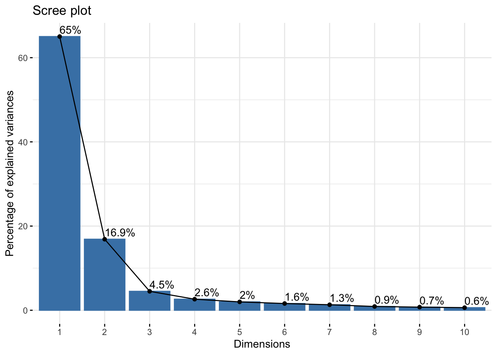
fviz_pca_var(s_cie_pca, col.var = "black")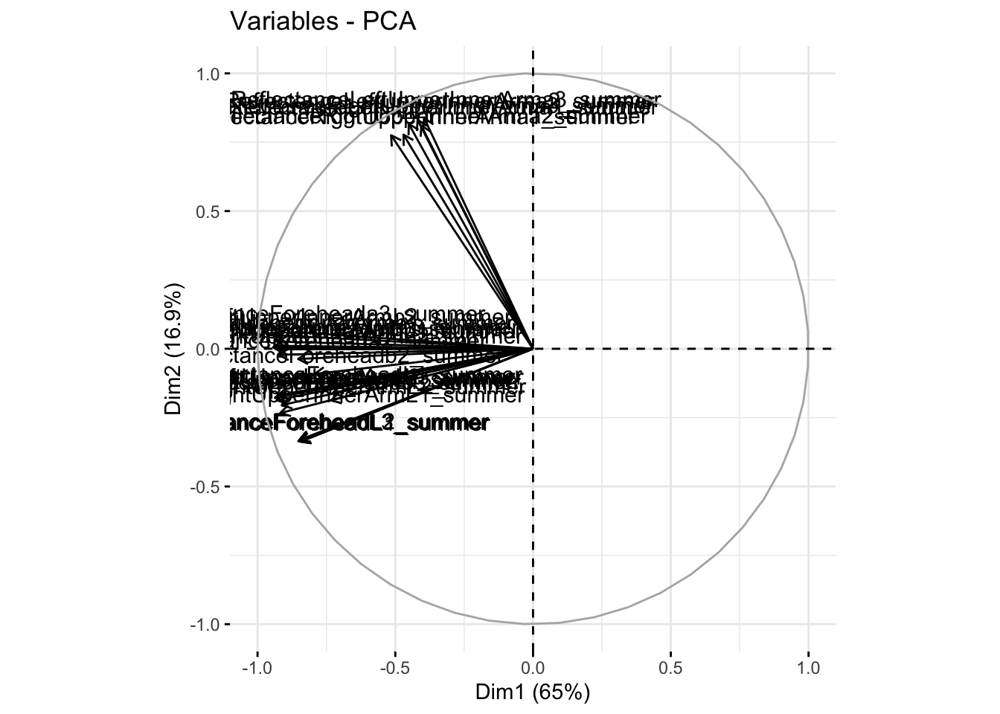
s_cie_comps <- as.data.frame(s_cie_pca$x)
s_cie_score <- cbind(naomit_summer,s_cie_comps[,c(1,2)])
ggplot(s_cie_score, aes(x=PC1, y=PC2, col = Ethnicity, fill = Ethnicity)) +
stat_ellipse(geom = "polygon", col= "black", alpha =0.5)+
geom_point(shape=21, col="black") +
labs(title = "Summer CIElab Pigmentation PCA")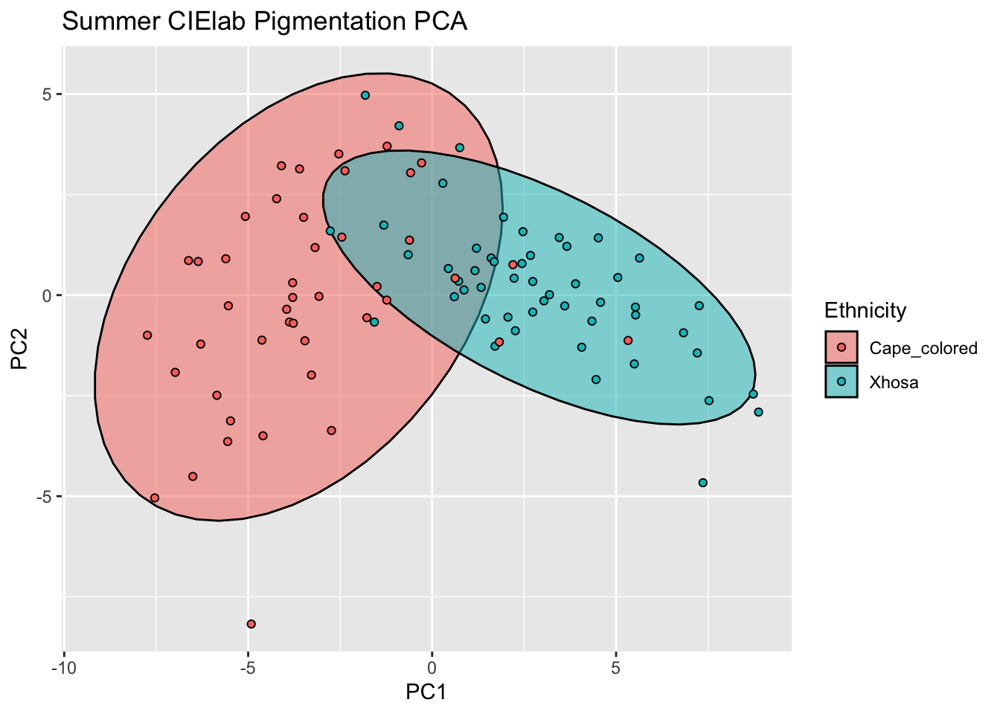
Now that I have PCAs from the triplicate measurements for each season and each color space, I can extract the PC scores for each individual and use these as outcome variables based on our predictors in a simple regression.
s_cie_score <- s_cie_score %>%
select(c("PC1", "PC2", "ParticipantCentreID", "Ethnicity"))
w_cie_score <- w_cie_score %>%
select(c("PC1", "PC2", "ParticipantCentreID", "Ethnicity"))
s_rgb_score <- s_rgb_score %>%
select(c("PC1", "PC2", "ParticipantCentreID", "Ethnicity"))
w_rgb_score <- w_rgb_score %>%
select(c("PC1", "PC2", "ParticipantCentreID", "Ethnicity"))
cie_scores <- left_join(s_cie_score, w_cie_score, by = "ParticipantCentreID",
suffix = c("_summerCIE", "_winterCIE"))
rgb_scores <- left_join(s_rgb_score, w_rgb_score, by = "ParticipantCentreID",
suffix = c("_summerRGB", "_winterRGB"))
colorspace_scores <- left_join(rgb_scores, cie_scores, by = "ParticipantCentreID")
sunning <- sun_expos %>%
select(contains(c("x1", "x2", "x3", "x4", "participant", "collection"))) %>%
pivot_wider(names_from = collection_period, values_from = c("x1time_spent_outdoors_weekday", "x2time_of_day_begin_of_exposure_weekday", "x3time_spent_outdoors_weekend_day", "x4time_of_day_begin_of_exposure_weekend"))
colorspace_predictors <- left_join(colorspace_scores, sunning, by = c("ParticipantCentreID" = "participant_centre_id"))
vitd_score <- vitdscore %>%
pivot_wider(names_from = collection_period, values_from = c(vitd_quantile_intake, total_vit_d_intake), values_fill = 0)
colorspace_predictors <- left_join(colorspace_predictors, vitd_score, by = c("ParticipantCentreID" = "participant_centre_id"))wrgblm <- lm(PC1_winterRGB ~ Ethnicity_summerRGB + total_vit_d_intake_Winter +
x1time_spent_outdoors_weekday_Winter + x2time_of_day_begin_of_exposure_weekday_Winter +
x3time_spent_outdoors_weekend_day_Winter + x4time_of_day_begin_of_exposure_weekend_Winter,
data = colorspace_predictors)
wrgblm_summary <- summary(wrgblm)
wrgbr_squared <- wrgblm_summary$r.squared
wrgbcoefficients <- wrgblm_summary$coefficients
ggplot(colorspace_predictors, aes(x = total_vit_d_intake_Winter, y = PC1_winterRGB, color = Ethnicity_winterRGB)) +
geom_point() +
scale_color_manual(values = wes_palette("Darjeeling1")) +
geom_smooth(method = "lm", aes(group = Ethnicity_winterRGB)) +
theme_minimal() +
labs(
title = "VitD vs Summer RGB PC score",
x = "Total Vitamin D Intake (Summer)",
y = "Summer RGB PC1",
color = "Ethnicity"
) +
annotate("text",
x = 15,
y = -10,
label = paste("R-squared: ", round(wrgbr_squared, 3)),
size = 4, color = "black", hjust = 0)`geom_smooth()` using formula = 'y ~ x'Warning: Removed 18 rows containing non-finite outside the scale range
(`stat_smooth()`).Warning: Removed 18 rows containing missing values or values outside the scale range
(`geom_point()`).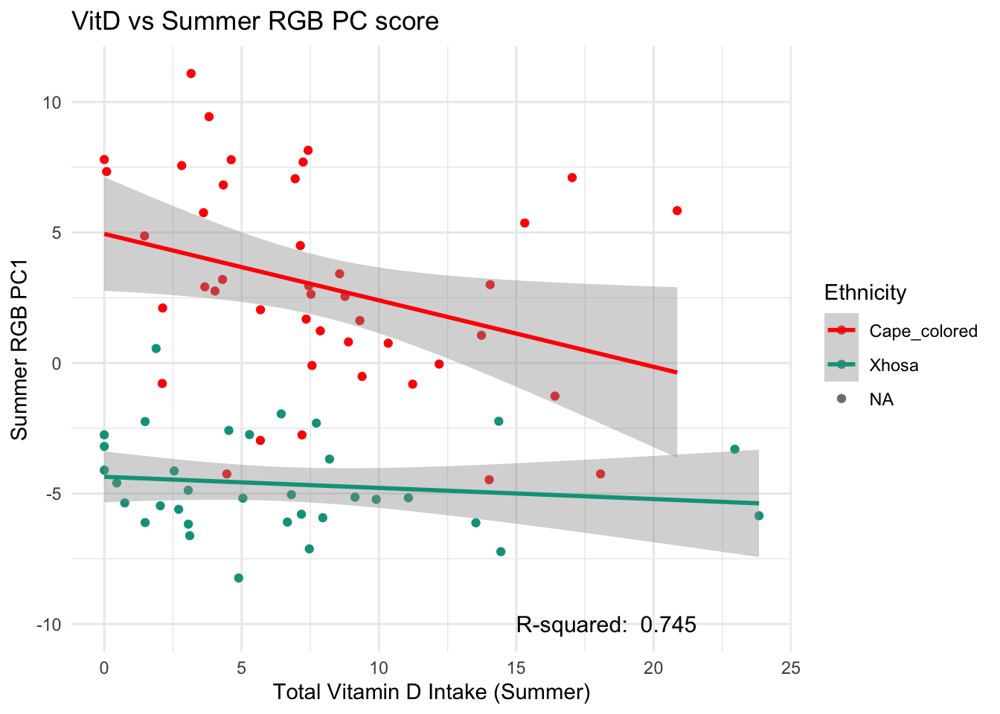
srgblm <- lm(PC1_summerRGB ~ Ethnicity_summerRGB + total_vit_d_intake_Summer +
x1time_spent_outdoors_weekday_Summer + x2time_of_day_begin_of_exposure_weekday_Summer +
x3time_spent_outdoors_weekend_day_Summer + x4time_of_day_begin_of_exposure_weekend_Summer,
data = colorspace_predictors)
srgblm_summary <- summary(srgblm)
srgbr_squared <- srgblm_summary$r.squared
srgbcoefficients <- srgblm_summary$coefficients
ggplot(colorspace_predictors, aes(x = total_vit_d_intake_Summer, y = PC1_summerRGB, color = Ethnicity_summerRGB)) +
geom_point() +
scale_color_manual(values = wes_palette("Darjeeling1")) +
geom_smooth(method = "lm", aes(group = Ethnicity_summerRGB)) +
theme_minimal() +
labs(
title = "VitD vs Summer RGB PC score",
x = "Total Vitamin D Intake (Summer)",
y = "Summer RGB PC1",
color = "Ethnicity"
) +
annotate("text",
x = 15,
y = -10,
label = paste("R-squared: ", round(srgbr_squared, 3)),
size = 4, color = "black", hjust = 0)`geom_smooth()` using formula = 'y ~ x'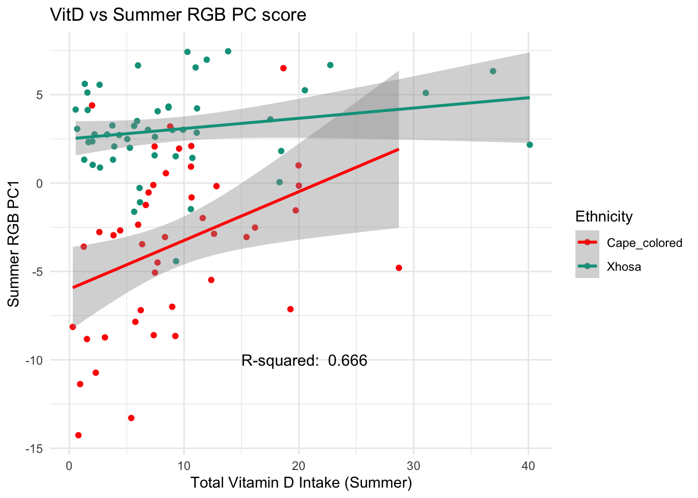
wcielm <- lm(PC1_winterCIE ~ Ethnicity_summerRGB + total_vit_d_intake_Winter +
x1time_spent_outdoors_weekday_Winter + x2time_of_day_begin_of_exposure_weekday_Winter +
x3time_spent_outdoors_weekend_day_Winter + x4time_of_day_begin_of_exposure_weekend_Winter,
data = colorspace_predictors)
wcielm_summary <- summary(wcielm)
wcier_squared <- wcielm_summary$r.squared
wciecoefficients <- wcielm_summary$coefficients
ggplot(colorspace_predictors, aes(x = total_vit_d_intake_Winter, y = PC1_winterCIE, color = Ethnicity_winterCIE)) +
geom_point() +
scale_color_manual(values = wes_palette("Darjeeling1")) +
geom_smooth(method = "lm", aes(group = Ethnicity_winterCIE)) +
theme_minimal() +
labs(
title = "VitD vs Winter CIE PC score",
x = "Total Vitamin D Intake (Winter)",
y = "Winter CIElab PC1",
color = "Ethnicity"
) +
annotate("text",
x = 15,
y = -10,
label = paste("R-squared: ", round(wcier_squared, 3)),
size = 4, color = "black", hjust = 0)`geom_smooth()` using formula = 'y ~ x'Warning: Removed 18 rows containing non-finite outside the scale range
(`stat_smooth()`).Warning: Removed 18 rows containing missing values or values outside the scale range
(`geom_point()`).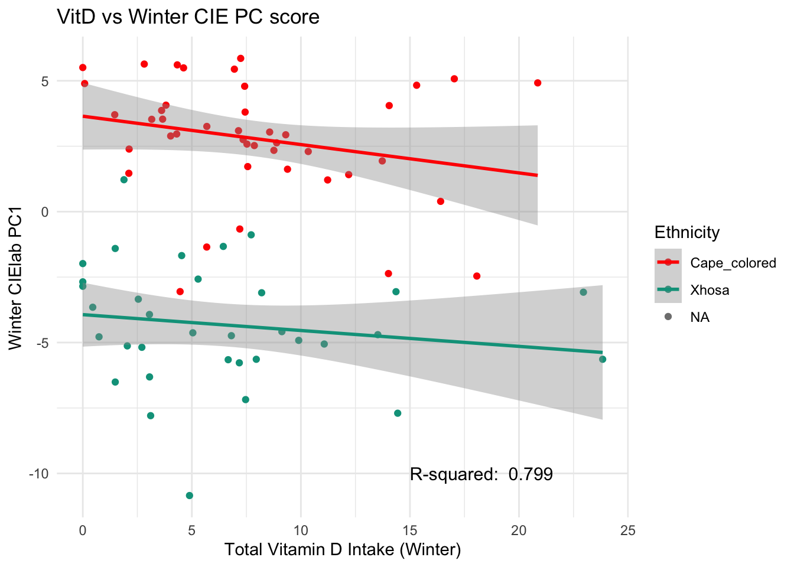
scielm <- lm(PC1_summerCIE ~ Ethnicity_summerRGB + total_vit_d_intake_Summer +
x1time_spent_outdoors_weekday_Summer + x2time_of_day_begin_of_exposure_weekday_Summer +
x3time_spent_outdoors_weekend_day_Summer + x4time_of_day_begin_of_exposure_weekend_Summer,
data = colorspace_predictors)
scielm_summary <- summary(scielm)
scier_squared <- scielm_summary$r.squared
sciecoefficients <- scielm_summary$coefficients
ggplot(colorspace_predictors, aes(x = total_vit_d_intake_Summer, y = PC1_summerCIE, color = Ethnicity_summerCIE)) +
geom_point() +
scale_color_manual(values = wes_palette("Darjeeling1")) +
geom_smooth(method = "lm", aes(group = Ethnicity_summerCIE)) +
theme_minimal() +
labs(
title = "VitD vs Summer CIE PC score",
x = "Total Vitamin D Intake (Summer)",
y = "Summer CIElab PC1",
color = "Ethnicity"
) +
annotate("text",
x = max(colorspace_predictors$total_vit_d_intake_Summer) * 0.75, # Adjust x-position to fit within the plot area
y = min(colorspace_predictors$PC1_summerCIE) + 0.1, # Adjust y-position to prevent overlap
label = paste("R-squared: ", round(scier_squared, 3)),
size = 4, color = "black", hjust = 0)`geom_smooth()` using formula = 'y ~ x'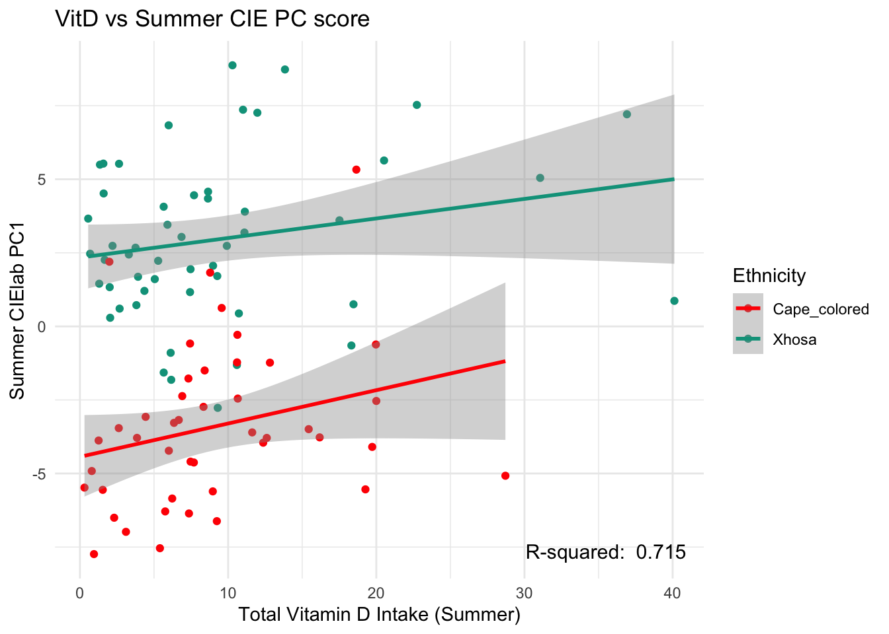
sessionInfo()R version 4.4.2 (2024-10-31)
Platform: aarch64-apple-darwin20
Running under: macOS Monterey 12.5.1
Matrix products: default
BLAS: /Library/Frameworks/R.framework/Versions/4.4-arm64/Resources/lib/libRblas.0.dylib
LAPACK: /Library/Frameworks/R.framework/Versions/4.4-arm64/Resources/lib/libRlapack.dylib; LAPACK version 3.12.0
locale:
[1] en_US.UTF-8/en_US.UTF-8/en_US.UTF-8/C/en_US.UTF-8/en_US.UTF-8
time zone: America/Detroit
tzcode source: internal
attached base packages:
[1] stats graphics grDevices utils datasets methods base
other attached packages:
[1] ggstatsplot_0.13.0 lme4_1.1-36 Matrix_1.7-1 rstatix_0.7.2
[5] ggpubr_0.6.0 ggfortify_0.4.17 wesanderson_0.3.7 missMDA_1.19
[9] FactoMineR_2.11 factoextra_1.0.7 ggcorrplot_0.1.4.1 corrr_0.4.4
[13] readxl_1.4.3 lubridate_1.9.4 forcats_1.0.0 stringr_1.5.1
[17] purrr_1.0.2 tibble_3.2.1 ggplot2_3.5.1 tidyverse_2.0.0
[21] tidyr_1.3.1 dplyr_1.1.4 readr_2.1.5
loaded via a namespace (and not attached):
[1] rstudioapi_0.17.1 jsonlite_1.8.9 shape_1.4.6.1
[4] datawizard_1.0.0 correlation_0.8.6 magrittr_2.0.3
[7] TH.data_1.1-3 estimability_1.5.1 jomo_2.7-6
[10] farver_2.1.2 nloptr_2.1.1 rmarkdown_2.29
[13] fs_1.6.5 vctrs_0.6.5 minqa_1.2.8
[16] paletteer_1.6.0 effectsize_1.0.0 htmltools_0.5.8.1
[19] broom_1.0.7 cellranger_1.1.0 Formula_1.2-5
[22] mitml_0.4-5 sass_0.4.9 bslib_0.8.0
[25] htmlwidgets_1.6.4 sandwich_3.1-1 emmeans_1.10.6
[28] zoo_1.8-12 cachem_1.1.0 lifecycle_1.0.4
[31] iterators_1.0.14 pkgconfig_2.0.3 R6_2.5.1
[34] fastmap_1.2.0 rbibutils_2.3 digest_0.6.37
[37] colorspace_2.1-1 rematch2_2.1.2 patchwork_1.3.0
[40] rprojroot_2.0.4 labeling_0.4.3 timechange_0.3.0
[43] mgcv_1.9-1 abind_1.4-8 compiler_4.4.2
[46] bit64_4.6.0-1 withr_3.0.2 doParallel_1.0.17
[49] backports_1.5.0 carData_3.0-5 ggsignif_0.6.4
[52] pan_1.9 MASS_7.3-64 scatterplot3d_0.3-44
[55] flashClust_1.01-2 tools_4.4.2 httpuv_1.6.15
[58] statsExpressions_1.6.2 nnet_7.3-20 glue_1.8.0
[61] nlme_3.1-166 promises_1.3.2 grid_4.4.2
[64] cluster_2.1.8 generics_0.1.3 gtable_0.3.6
[67] tzdb_0.4.0 hms_1.1.3 car_3.1-3
[70] ggrepel_0.9.6 foreach_1.5.2 pillar_1.10.1
[73] vroom_1.6.5 later_1.4.1 splines_4.4.2
[76] lattice_0.22-6 bit_4.5.0.1 survival_3.8-3
[79] tidyselect_1.2.1 knitr_1.49 git2r_0.35.0
[82] reformulas_0.4.0 gridExtra_2.3 xfun_0.50
[85] DT_0.33 stringi_1.8.4 workflowr_1.7.1
[88] yaml_2.3.10 boot_1.3-31 evaluate_1.0.3
[91] codetools_0.2-20 multcompView_0.1-10 cli_3.6.3
[94] RcppParallel_5.1.10 rpart_4.1.24 xtable_1.8-4
[97] parameters_0.24.1 Rdpack_2.6.2 munsell_0.5.1
[100] jquerylib_0.1.4 Rcpp_1.0.14 zeallot_0.1.0
[103] coda_0.19-4.1 parallel_4.4.2 leaps_3.2
[106] rstantools_2.4.0 bayestestR_0.15.0 glmnet_4.1-8
[109] mvtnorm_1.3-3 scales_1.3.0 crayon_1.5.3
[112] insight_1.0.1 rlang_1.1.4 multcomp_1.4-28
[115] mice_3.17.0